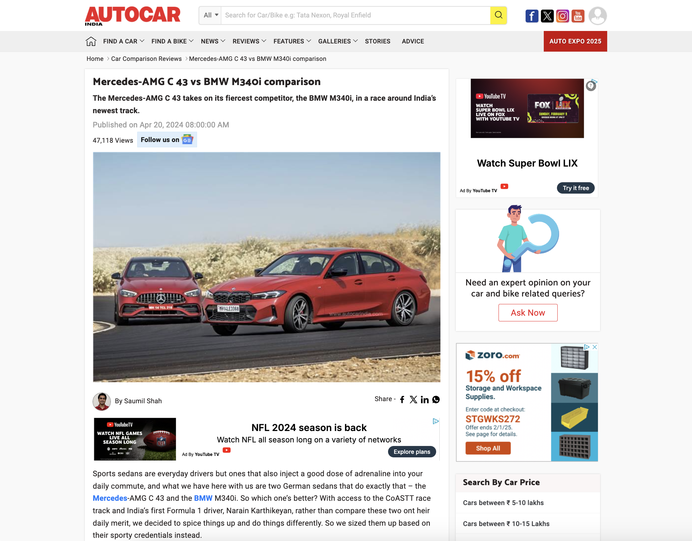

Task Mode: Dynamic Filtering for Task-Specific Web Navigation using LLMs
University of Texas at Austin
ASSETS 2025
![The figure shows information from left to right. The leftmost frame shows an e-commerce webpage where the image appears. An arrow points to the right from this picture to the image that the user selects on the webpage to obtain context-aware image description. An arrow from the selected image points to the right to the context-free description generated by GPT-4V. Arrows from the webpage labeled “extracted webpage context” and user selected image point to the rightmost frame that contains the context-aware description.](media/Teaser.png)
Our system provides context-aware descriptions for images by considering the image along with extracted details from the image source to craft a description that uses correct visual terminology (e.g., chenille texture rather than velvet) and focuses on the relevant item (e.g., the sofa rather than the room).
Abstract
Modern web interfaces are unnecessarily complex to use as they overwhelm users with excessive text and visuals unrelated to their current goals. This problem particularly impacts screen reader users (SRUs), who navigate content sequentially and may spend minutes traversing irrelevant elements before reaching desired information compared to vision users (VUs) who visually skim in seconds. We present Task Mode, a system that dynamically filters web content based on user-specified goals using large language models to identify and prioritize relevant elements while minimizing distractions. Our approach preserves page structure while offering multiple viewing modes tailored to different access needs. Our user study with 12 participants (6 VUs, 6 SRUs) demonstrates that our approach reduced task completion time for SRUs while maintaining performance for VUs, decreasing the completion time gap between groups from 2x to 1.2x. 11 of 12 participants wanted to use Task Mode in the future, reporting that Task Mode supported completing tasks with less effort and fewer distractions. This work demonstrates how designing new interactions simultaneously for visual and non-visual access can reduce rather than reinforce accessibility disparities in future technology created by human-computer interaction researchers and practitioners.
Types of Webpage Context
| Category | Type | Examples | Function |
|---|---|---|---|
| Content | URL | google.com | Purpose |
| Title | title tag | Purpose, visual concepts | |
| Main Text | article, post text | Purpose, visual concepts | |
| Tags | h1, h3, a, p | Text importance or purpose | |
| Alt Text | alt tag | Image content, purpose, visual concepts | |
| Caption | figcaption | Image content, purpose, visual concepts | |
| Media | image, video | Purpose | |
| Content Appearance | Size | width, height | Purpose, importance, relationship |
| Position | x, y, alignment | Purpose, importance, relationship | |
| Color | color | Purpose, importance, relationship | |
| Font | family, weight | Purpose, importance, relationship | |
| Visibility | hidden | Purpose, importance, relationship | |
| Other | texture, opacity | Purpose, importance, relationship | |
| Media | thumbnail, fullscreen | Purpose, importance, relationship | |
| Image Appearance | Size | thumbnail, fullscreen | Purpose, importance, relationship |
| Position | top vs. mid article | Purpose, importance, relationship | |
| Other | contrast, opacity | Purpose, importance, relationship |
Examples of webpage context that may impact the visual interpretation of an image and how the image is described. Most of these webpage elements are selected intentionally by webpage authors (e.g., position of text content) to convey importance and structure to audience members, but others are dynamically added (e.g., advertisements)
Pipeline
![The figure shows a diagram of system pipeline. From left to right, the diagram shows 6 groupings or columns, all connected by arrows pointing to the right. The first group includes Selected Image and Webpage. From Selected Image, there are two arrows pointing right to Alt and Image which are in the second group. From Webpage, there are three arrows pointing right to Title, URL, and Text (also in the second group). In the third column, there is an arrow pointing from URL to Purpose, and from Text there is an arrow pointing to the right to “Text to Image Distance (pixels), Text to Image Location (L, R, T,B), and Text to Image Similarity (CLIPScore). The Image also points to the right to Long Context-free Image Description and Initial Context-aware Image Description in the fourth group. Image, Alt, Title and Initial Context-aware Image Description all point to the right to Visually Concrete Text in the fifth column. The Long Context-free description points to the right to Short Context-free Image Description. The Visually Concrete Text and The Image point to the right to Long Context-Aware Image Description in the right in the sixth group. The Long Context-Aware Image Description points downwards to the Short Context-Aware Image Description.](media/System.png)
The system takes a webpage and a selected webpage image as selected by the user, then extracts all of the text elements on the page. It analyzes the webpage to get an image relevance score for each text element. Our score considers the distance between the text element and the target image, position of the text in comparison to the image, and the CLIP score similarity between the image and the text. For each text element, we combine these scores together to achieve the final relevance score. We use the extracted context text and its scores to inform the final context-aware description.
System

When a user clicks on an image in a website (right), our extension adds both long and short versions of the context-free and context-aware descriptions to a separate extension window (left).
Results
| Image | Context-Free Descriptions | Context-Aware Descriptions |
|---|---|---|
| The image shows a smiling person with vibrant black and neon green hair, holding multiple gold gramophone trophies against a white background with blurred gold symbols. They wear a loose, black and green patterned outfit with metallic details, conveying a sense of accomplishment and pride in their music industry achievements. | In the image, Billie Eilish stands joyfully holding multiple golden Grammy trophies. Her distinctive green and black hair stands out against a backdrop of blurred Grammy trophies. The golden gleam of the awards she's holding symbolizes both a brand transformation and her rise as a global phenomenon. The aesthetic embodies the Grammy Awards' iconography and celebrates musical achievements, marking a significant moment in Billie Eilish's career. | |
| A man and woman walk side by side, the man in a dark navy suit and the woman in an elegant black dress, both with serious expressions. The blurred background hints at a formal setting with a large building and a black car partially visible. The desaturated colors make the subjects stand out as the focal point of the image. | Harry is in a navy suit with a white shirt and blue tie, sporting a watch, and has red hair and a beard. Meghan wears a chic black dress with a boat neckline and three-quarter sleeves. Behind them is a blurred historic building with arches, and there's a glimpse of a black vehicle to Harry's side.Their attire and the setting suggest they're attending a significant event. | |
 |
The image shows a person modeling a sleeveless maxi dress with pastel floral patterns and a flowing, tiered skirt. The model is wearing flat, strappy sandals and posing with one hip cocked, emphasizing the dress's bohemian aesthetic. The image has good lighting and an invisible background, highlighting the dress and model. | The image shows a person in a V-neck sleeveless maxi dress with a bohemian style, marked by thin straps and a flowing skirt with an asymmetrical hem. The dress features a bluebell and paisley print in pink, white, and green. The person appears to be twirling, accentuating the skirt's movement. |
| A family of four poses outdoors, smiling at the camera. On the left is a young woman in a blue polka-dotted dress, next to her is a woman in a teal dress, then a man in a suit, and finally another young woman in a bright orange and neon yellow-green dress. They stand in front of a tree with pink blossoms. | Four people pose for a photo amidst cherry blossoms. On the left, Malia is in a blue sleeveless dress with polka dots. Next to her, Michelle sports a teal dress. Barack stands in the center in a dark suit, white shirt, and gray tie. On the right, Sasha wears a color-blocked dress with a coral top and yellow skirt, accented by a white belt. They all smile, and the White House is visible behind them in what seems to be the Rose Garden. | |
| An elegant bronze-finished sofa with dark brown solid wood frame and silver accents set against a warmly lit room, upholstered in beige pearl fabric with chenille texture, striped seat cushions, button-tufted backs, and coordinating throw pillows. | The image depicts a classically styled room with a large, traditional sofa upholstered in warm beige velvet-like fabric and ornate wooden accents. A small side table holds a vase of flowers, while sheer curtains let in natural light from the window. A patterned area rug, wooden coffee table with books, matching table lamps, and a framed picture add to the room's elegant and inviting ambiance. | |
| The image depicts a peaceful mountain landscape at dawn or dusk with snow-capped peaks bathed in golden sunlight against a gradient blue sky. A hiker in a yellow jacket stands on a rocky ledge, gazing across misty hills and valleys, embodying a sense of wonder and adventure. | The image shows an individual trekking on a rugged terrain with a sweeping view of the snow-capped Annapurna Range in the Himalayas. Positioned on the left, the person is clad in a yellow jacket and beanie, holding a camera or device to their face, possibly capturing the vista. The mountains, illuminated by the soft light of the sun, form a striking background, creating an atmosphere of serenity and adventure. |
Example context-free and context-aware descriptions for Task 1 in the user study
| P8 Image | Context-Free Description |
|---|---|
| The image shows two modern, sporty cars - a red Mercedes-Benz and a bright red BMW - driving side by side on an asphalt road with a dry landscape. Both cars showcase aggressive designs with LED headlights and distinct brand grilles. The BMW is slightly ahead, hinting at a competition. | |
| P8 Website | Context-Aware Description |
 |
Two red German sports sedans, a Mercedes-AMG C 43 and a BMW M340i, are positioned side by side on a race track, showing off their designs and performance features. The Mercedes displays its emblematic grille and dynamic headlights, while the BMW showcases its signature kidney grille and sharp headlight contours. Both cars feature alloy wheels, low-profile tires, and Maharashtra license plates. |
Example context-free and context-aware descriptions for a website and image selected by P8.
BibTeX
@article{mohanbabu2024context,
title={Context-Aware Image Descriptions for Web Accessibility},
author={Mohanbabu, Ananya Gubbi and Pavel, Amy},
journal={arXiv preprint arXiv:2409.03054},
year={2024}
}